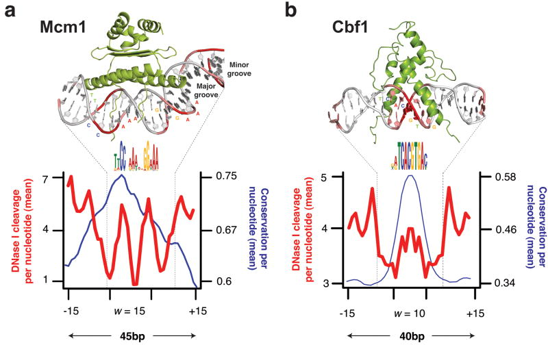

Chromatin accessibility I
Chromatin-centric measurement of genomic features
Chromatin accessbility patterns and genome function
This class we’ll examine chromatin accessibility patterns and begin to get a sense of what they mean, both at the fine-scale (single base-pair) and across the genome.
Load the libraries
These are libraries we’ve used before.
These are new libraries specifically for genome analysis. You learned about valr and Gviz for your homework.
-
TxDb.Scerevisiae.UCSC.sacCer3.sgdGeneprovides gene annotations for the S. cerevisiae genome.
Load the data
In this and the next class we will analyze ATAC-seq and MNase-seq data sets from budding yeast. Here are the references for the two data set:
ATAC-seq
Schep AN, Buenrostro JD, Denny SK, Schwartz K, Sherlock G, Greenleaf WJ. Structured nucleosome fingerprints enable high-resolution mapping of chromatin architecture within regulatory regions. Genome Res. 2015 PMID: 26314830; PMCID: PMC4617971. [Link] [Data]
MNase-seq
Zentner GE, Henikoff S. Mot1 redistributes TBP from TATA-containing to TATA-less promoters. Mol Cell Biol. 2013 PMID: 24144978; PMCID: PMC3889552. [Link] [Data]
Experimental consideration
In a standard MNase-seq experiment, DNA around ~150 bp is extracted to look closely at nucleosome occupancy & positioning. However, the above study did not perform size selection. This is important as now we can look at both transcription factor binding sites and nucleosome positions.
Fragment size distributions are informative
First, we will determine the fragment size distributions obtained from the two experiments. These sizes are the fingerprints of particles that were protecting nuclear DNA from digestion.
I have performed the alignment of paired-end reads and converted all reads into a bed file where each line of the bed file denotes a single fragment from start to end.
First, load the ATAC-seq reads:
Next, load the MNase reads.
Working with a small genome is a huge advantage – we can study the whole chromosome in this class.
Expectations for chromatin fragment lengths
Let’s remind ourselves of the expectations for chromatin fragment lengths from MNase-seq and ATAC-seq experiments.
MNase-seq

ATAC-seq

Length distributions of chromatin-derived DNA fragments
For the MNase-seq BED file, you see that there are only three columns: chrom, start, and end.
Calculating fragment length is simple:
Let’s use this approach to examine the fragment length distribution.
First, we will combine the two data sets into a single tibble, adding a new column to indicate the type of experiment.
Interpretations
How would you describe the two fragment length distributions? Are they similar?
Can you make any biological conclusions based on the length distributions?
Periodicity in the fragment lengths
The ATAC data seems to be periodic. How can we test that hypothesis? We can calculate the autocorrelation of the length distribution. Can someone explain what autocorrelation means?
We’ll use the base hist function to calculate the densities of the above histogram. Let’s write a function we can use to analyze fragment lengths.
Autocorrelation
The density slot contains a vector of densities at base-pair resolution. We will use acf() to calculate the autocorrelation of these values, and will store the tidied result.
Autocorrelation
Now let’s plot the autocorrelation. First, we define a function.
And then we make the plot.
Autocorrelation
So, it looks like there significant bumps in autocorrelation at 10 and 21 bp positions, indicating that ATAC length distribution is periodic.
How do we confirm these bumps are interesting? Let’s calculate the acf of a negative control – the length distribution of the MNase data.
Interpretation
We can see a monotonic decrease in the MNase-seq data, which confirms that the bumps we see are distinctive features of ATAC-seq data.
What are these features? Consider that the specificity of binding of DNase, MNase, and Tn5 is not completely generic. These enzymes have specificity for the minor groove of DNA, and there is an optimal substrate geometry for cleavage. You can see this in previous studies, where DNase-seq revealed high-resolution views of DNA:protein structures.
So what then, exactly is the ~10-11 bp periodicity? And why is this not present in MNase data?
Molecular Picture of DNA accessibility

Visualize read density in genomic region
We will use Gviz to visualize read densities relative to a reference.
Load tracks
First, we load the gene annotations from the Saccharomyces Genome Databases (SGD).
Import bigWig
Next, import the bigwig file containing yeast nucleosome-sized fragments (via MNase-seq) using valr::read_bigwig().
Inspect the object.
(What is “GRanges”?)
Load track
Next, load the GRanges object as a track for Gviz to plot:
Vizualize a genomic region
Now, we can make a plot for this particular region of chrII:
Load the remaining data
That looks great! Let’s load all the other data sets.
- Load each bigWig as a GRanges object with
valr::read_bigwig() - Convert each to a
Gviz::DataTrack()for plotting
Load the remaining data
We can do this one of two ways. We could do it one-by-one:
Or we can create a tibble with file and track names, and use purrr to load and convert each one.
First, we define a tibble of files and metadata.
Load the remaining data
Load the remaining data
Now, we just have to make a list of tracks to plot and Gviz takes care of the rest.
Interpretations
Recall this plot:
Some questions to think about as you look at the tracks:
- What is each data set reporting on?
- What are the major differences between MNase-seq and ATAC-seq based on these tracks?
- What can you infer about gene regulation based on these tracks?